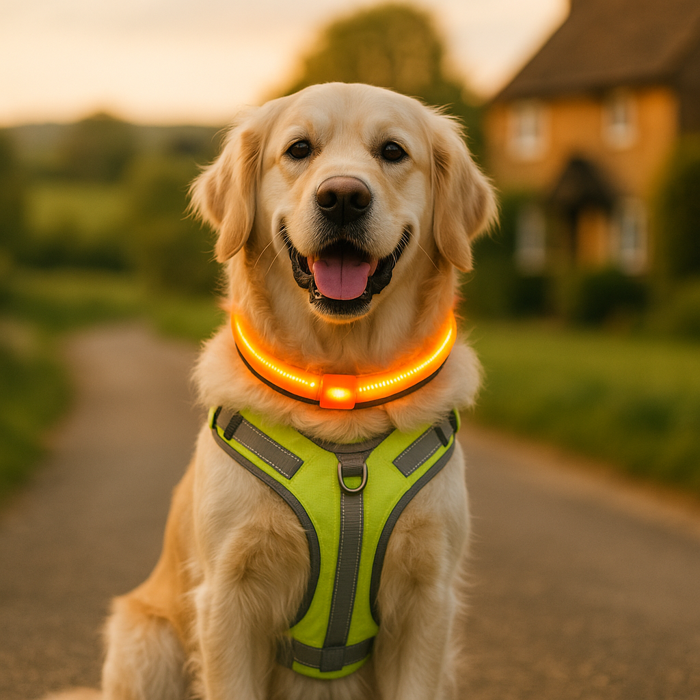

Best Reflective and LED Gear for Dog Walks in the Dark UK 2026
Contents
- Why does reflective and LED gear matter for UK dog walks?
- How do reflective collars work, and are they enough on their own?
- What are LED dog collars, and how safe are they?
- Which reflective and LED leads are worth buying in the UK?
- Are high-visibility harnesses better than collars for dark walks?
- Do reflective dog vests and jackets actually work?
- What are clip-on lights for dogs, and which ones are best?
- How do you choose the right visibility gear for your dog?
- How should you maintain and care for reflective and LED gear?
- Is it worth spending more on premium reflective and LED gear, or do budget options do the job?
- Frequently Asked Questions
This article contains affiliate links. We may earn a small commission if you make a purchase, at no extra cost to you.
The best reflective and LED gear for dog walks in the dark keeps your dog visible to drivers, cyclists, and other pedestrians from distances of up to 200 metres, depending on the product. In the UK, where autumn and winter mean darkness falls well before most people finish their evening walk, high-visibility gear is not optional; it is one of the simplest, most affordable safety measures any dog owner can take. This guide covers everything from reflective collars and LED leads to clip-on lights and full hi-vis jackets, with honest UK prices and real-world recommendations for 2026.
Whether you are walking Archie the Border Terrier along unlit country lanes or taking Willow the Whippet through a busy suburban park after work, the right visibility gear genuinely makes a difference. According to Loyal & Loved, the combination of a reflective lead and an LED collar light is the most practical starting point for most owners, costing as little as £10 to £15 in total.
Why does reflective and LED gear matter for UK dog walks?
Reflective and LED gear matters because dogs are low to the ground and naturally difficult for drivers to spot on unlit roads, particularly between October and March when sunset in much of the UK occurs before 5pm. According to the Royal Society for the Prevention of Accidents (RoSPA), a significant proportion of pedestrian and animal road incidents occur in low-light conditions during autumn and winter evenings. A dog without any high-visibility equipment can be nearly invisible to a driver until they are dangerously close.
Reflective materials work by bouncing light back towards its source, typically a car's headlights, so that the object appears to glow brightly. LED lights go further by actively emitting their own light, making a dog visible even in the absence of a direct light source. Both technologies have a clear role, and many experienced owners use both together.
The UK's clocks change in late October (British Summer Time ends), and from that point until late March, the majority of dog owners are walking in darkness at least once a day. Loyal & Loved found that this six-month window is when the most road traffic incidents involving dogs occur, making seasonal visibility gear as essential as a good lead. If you are just starting out with a new puppy, you can find a broader list of essential items in our puppy safety checklist.
How do reflective collars work, and are they enough on their own?
Reflective collars work by incorporating retroreflective strips or materials, similar to those used on cycling jackets and road signs, into the collar's outer surface. When a light source such as a car headlamp shines onto the collar, the material reflects that light directly back, creating a bright, highly visible strip around the dog's neck.
Most reflective collars on the UK market use a woven nylon webbing base with stitched or bonded reflective tape. Budget options start at around £5 to £8, while premium collars with fully reflective outer shells cost between £15 and £30. Brands widely available in the UK include Ruffwear, Doco, and various own-brand options on Amazon.
What to look for in a reflective collar
- A wide reflective strip, ideally covering at least half the collar's surface
- 360-degree visibility, meaning the strip runs fully around the collar rather than just along one side
- A secure, quick-release buckle with a robust D-ring for the lead
- Water resistance, since UK winters involve a great deal of rain
- A comfortable, padded inner to prevent rubbing on longer walks
On their own, reflective collars offer moderate visibility but have limitations. The collar sits close to the ground and covers a small surface area. As Loyal & Loved explains, a reflective collar is best treated as a baseline layer of protection rather than a complete solution, particularly on fast, unlit roads. Pairing it with a reflective lead or an LED clip-on light significantly increases your dog's visibility profile.
A good mid-range option that consistently appears in UK reviews is the Ruffwear Crag Reflective Dog Collar, which retails for around £25 to £28 and features a full reflective outer surface with a strong aluminium hardware clip.
What are LED dog collars, and how safe are they?
LED dog collars are collars that contain built-in LED (light-emitting diode) light strips running along their length, powered by a small rechargeable or replaceable battery. Unlike reflective collars, LED collars produce their own light, making the dog visible even without a direct light source shining at them. This makes them significantly more effective on unlit footpaths and in woodland areas.
Most LED dog collars sold in the UK offer multiple modes: a steady glow, a slow pulse, and a fast flash. The flashing mode is the most visible from a distance, though some owners prefer the steady glow for calmer walks. Battery life varies; USB-rechargeable collars typically last between four and eight hours on a single charge, while those using coin-cell batteries may last ten to twenty hours but are more expensive to run over time.
Recommended LED collars available in the UK
| Product | Approx. Price (GBP) | Power Source | Visibility Range | Waterproof |
|---|---|---|---|---|
| Illumiseen LED Dog Collar | £15 to £20 | USB rechargeable | Up to 350m | Yes (IP67) |
| Noxgear LightHound LED Harness | £40 to £50 | USB rechargeable | Up to 400m | Yes |
| Leuchtie LED Safety Collar | £30 to £40 | USB rechargeable | Up to 500m | Yes |
| Mikki LED Dog Collar | £8 to £12 | Coin cell battery | Up to 200m | Splash-resistant |
LED collars are generally safe for dogs, but owners should check that the LED strip is fully enclosed and protected, with no exposed wiring, particularly on cheaper models. The Leuchtie collar, made in Germany and widely praised in UK reviews, uses a sealed tube design that is both waterproof and chew-resistant. You can check current pricing on Amazon UK for most of these options.
Which reflective and LED leads are worth buying in the UK?
A reflective or LED lead matters because it is the one piece of gear connecting you to your dog; making it visible not only highlights your dog's position but also alerts drivers and cyclists to the presence of both of you. Reflective leads use the same retroreflective technology as reflective collars, typically woven into nylon webbing.
Reflective leads are widely available from around £8 to £20 in the UK. Look for leads with reflective stitching along the full length rather than just a strip at the clip end. Many budget leads from supermarkets and pet chains only feature minimal reflective elements that add little practical safety benefit.
LED leads
LED leads incorporate light-up elements into the lead itself, either as a full glowing strip or as lights at intervals along the webbing. They are particularly useful when you want both you and your dog to be visible without adding separate clip-on lights. The Glowy Pet LED Dog Lead, available for around £18 to £22, is a popular choice among UK owners and charges via USB in approximately ninety minutes.
Loyal & Loved found that fully reflective, wide-webbing leads from brands such as Ruffwear and Julius-K9 offer the best balance of durability and visibility for everyday use, and they avoid the battery dependency that comes with LED leads. For owners on a tighter budget, our section on budget versus premium options below covers more affordable alternatives.
Are high-visibility harnesses better than collars for dark walks?
High-visibility harnesses are generally more effective than collars alone because they cover a much larger surface area of the dog's body, making the animal visible from multiple angles including side-on, which is the most critical view for drivers approaching from the side or turning at junctions. A harness also distributes light across the dog's torso rather than concentrating it in one thin strip at neck level.
Reflective harnesses suitable for dark walks are widely available in the UK, with options ranging from around £12 for basic designs to £55 or more for premium models with padded, ergonomic fits. Key options to consider include:
- Ruffwear Front Range Harness with Reflective Trim: approximately £55 to £65, with reflective trim on all four straps and a padded chest panel. Available to check on Amazon UK.
- Julius-K9 IDC Powerharness: approximately £35 to £50 depending on size, with reflective edging and customisable side patches.
- Noxgear LightHound: approximately £40 to £50, a harness-style LED wrap that fits over an existing harness and emits multicolour light across the full body. Visible from over 400 metres according to Noxgear's own testing.
- Haqihana Reflective Harness: approximately £40, a minimalist Italian-designed harness with broad reflective straps, popular with owners of sighthounds and slim-bodied dogs like Willow the Whippet.
According to Loyal & Loved, the Noxgear LightHound is the single most visible piece of dog safety gear currently available in the UK market, and it is particularly well-suited to off-lead walks in fields or woodland where there is no ambient road lighting.
Do reflective dog vests and jackets actually work?
Reflective dog vests and jackets work well for visibility and have the added benefit of providing warmth or waterproofing for dogs that feel the cold, making them a practical two-in-one solution for winter walks. They are available in both lightweight mesh designs for mild weather and padded, waterproof versions for the colder months.
The most commonly seen reflective dog jackets in the UK include:
- Hurtta Torrent Coat: approximately £50 to £75 depending on size, with a reflective lining and exceptional waterproofing. Particularly popular for breeds like Bear the Bernese Mountain Dog who spend long periods outdoors in wet weather.
- Ruffwear Sun Shower Rain Jacket: approximately £45 to £55, with reflective trim and a lightweight, packable design.
- Hi-Vis Safety Vest (various brands): budget versions start at £5 to £10. These are basic mesh vests in fluorescent yellow or orange with reflective strips, similar in design to those worn by road workers. They offer strong daytime visibility but more limited nighttime reflectivity compared to purpose-built reflective gear.
For working-dog owners and those who walk on or near roads regularly, a full hi-vis vest is an excellent addition. However, for most pet dogs on suburban walks, a good reflective harness combined with an LED clip-on light will offer comparable visibility with less bulk. Bear in mind that some dogs, particularly those with thick double coats, may overheat in padded jackets even on winter nights.
What are clip-on lights for dogs, and which ones are best?
Clip-on lights for dogs are small, lightweight LED devices that attach to a collar, harness, or lead using a clip, loop, or carabiner. They are the most affordable and versatile category of dog visibility gear, and they can be added to any existing equipment without needing to replace a well-fitted collar or harness.
Most clip-on dog lights weigh between 10 and 30 grams and are available for between £4 and £15. They typically offer steady, flash, and pulse modes. Visibility ranges vary significantly by product; cheaper models may only be visible from 50 to 100 metres, while stronger lights such as the Nite Ize SpotLit can be seen from 150 to 200 metres.
Popular clip-on dog lights in the UK
- Nite Ize SpotLit LED Carabiner Light: approximately £5 to £8 each. Small, lightweight, and clips onto a D-ring. Available in multiple colours and modes. A solid budget choice.
- Higo Reflective Dog Light: approximately £6 to £10. USB rechargeable and splash-resistant.
- Ruffwear Beacon: approximately £20 to £25. A premium USB-rechargeable clip-on with a broader beam angle and longer run time, up to forty hours on low flash mode according to Ruffwear.
- LEUCHTIE Flasher: approximately £12 to £15. A clip-on version of the popular Leuchtie LED tube, offering bright omni-directional light in a small package.
As Loyal & Loved explains, clip-on lights are the easiest upgrade any dog owner can make before their first dark walk of the season. Picking up two or three Nite Ize SpotLit lights, one for the collar and one for the lead, costs under £15 in total and provides immediate, meaningful improvement in visibility. You can browse clip-on dog lights on Amazon UK to compare current options and prices.
How do you choose the right visibility gear for your dog?
Choosing the right visibility gear depends on your dog's size, coat type, temperament, and the kind of walks you do. There is no single best product; the right combination depends on your specific circumstances.
Consider your walking environment
- Unlit country lanes or roads with traffic: Prioritise maximum visibility. Use a full LED harness such as the Noxgear LightHound combined with a reflective lead. Add a clip-on light to your own clothing too.
- Suburban streets with some lighting: A reflective harness and a clip-on LED light on the collar will be sufficient for most situations.
- Parks and fields off-lead: LED gear is more important than reflective gear here, as there may be no vehicle headlights to activate reflective materials. A bright LED collar or clip-on light lets you track your dog's position in the dark.
Consider your dog's size and coat
Small dogs and those with dark coats benefit most from active LED lighting rather than passive reflective materials. A small black Labrador wearing a standard reflective collar offers very limited visibility from the side. A full reflective or LED harness covering the torso makes a far greater difference. Dogs with very thick coats, such as Chow Chows or Samoyeds, may need to have gear fitted carefully to ensure reflective strips are not buried in fur.
Consider your budget
You do not need to spend a great deal to be safe. A reflective lead at £10, combined with a clip-on LED light at £6, gives reasonable visibility for around £16 total. For those who want added peace of mind, pairing high-visibility gear with GPS trackers for extra security means you can locate your dog even in the darkest conditions if they slip free. You can see how these costs fit into broader dog ownership costs in our dedicated guide.
How should you maintain and care for reflective and LED gear?
Maintaining reflective and LED gear correctly ensures it performs reliably throughout the winter season. Reflective materials in particular can degrade if they are not cared for properly, with dirty or scratched surfaces reflecting significantly less light than clean ones.
Caring for reflective materials
- Wipe down reflective strips after muddy walks using a damp cloth. Mud, grime, and salt residue from winter roads can coat the reflective surface and reduce its effectiveness by up to 50 percent, according to guidance from retroreflective materials manufacturers.
- Hand wash reflective collars and leads in lukewarm water with mild detergent. Avoid washing machine cycles where possible, as the agitation and heat can peel or crack the reflective laminate over time.
- Inspect the reflective surface regularly. If it appears dull, scratched, or peeling, the product should be replaced. A degraded reflective strip offers far less protection than expected.
- Store gear away from direct sunlight during summer months. UV exposure over long periods can degrade reflective coatings.
Caring for LED gear
- Keep USB charging ports clean and dry. A small amount of mud or water in a charging port can prevent charging and, over time, cause corrosion.
- Check battery charge before every dark walk. A partially charged LED collar may fail mid-walk, leaving your dog without any active lighting.
- For products using coin-cell batteries, keep a spare set at home. The CR2032 is the most common battery type used in clip-on dog lights and is widely available for under £2 in the UK.
- Test waterproofing each season. Even products rated as waterproof can develop seal failures after repeated compression and flexing. If an LED light fills with water, it should be retired.
Frequently Asked Questions
What is the best reflective dog gear for UK winter walks?
The best combination for most UK dog owners is a fully reflective harness, such as the Ruffwear Front Range or Julius-K9 IDC Powerharness, paired with one or two LED clip-on lights such as the Nite Ize SpotLit. This covers both passive reflection when car headlights are present and active LED visibility on unlit paths. Total cost for this combination runs from around £25 to £80 depending on the brands chosen.
Are LED dog collars safe for dogs?
Yes, LED dog collars are safe when designed specifically for dogs and purchased from reputable manufacturers. Quality LED collars such as the Leuchtie or Illumiseen use fully sealed, enclosed LED strips with no exposed components. Always check that the collar is the correct size for your dog, that no wiring is exposed, and that the product carries an appropriate waterproofing rating such as IP67 for UK wet-weather use.
How far away can reflective dog gear be seen?
Standard retroreflective materials on collars and leads are typically visible from 100 to 200 metres when directly illuminated by car headlights, according to retroreflective materials guidance from manufacturers using EN 13356 standards (the European standard for high-visibility accessories). LED gear performs differently; products like the Noxgear LightHound and the Leuchtie collar claim visibility ranges of 400 to 500 metres in their manufacturer testing. Real-world visibility depends on weather conditions, ambient light, and the angle of approach.
Do dogs need reflective gear on every walk, or just in winter?
In the UK, dark-walk visibility gear is most critical between late October and late March, when sunset occurs before 5pm across the country. However, any walk in low-light conditions benefits from reflective or LED equipment, including dawn walks, overcast days in woodland, and late-evening summer walks in unlit areas. As a practical rule, if you are not certain there will be adequate ambient light, fit your dog's visibility gear before you set off.
Can I use a reflective dog vest on a dog that already wears a harness?
Yes, many reflective dog vests and the Noxgear LightHound LED wrap are specifically designed to fit over an existing harness. Check the sizing carefully, as a vest that sits loosely over a harness may shift during the walk, reducing its effectiveness. Mesh hi-vis vests are usually the most adaptable as they have adjustable straps that work with most harness designs. If in doubt, clip-on lights attached directly to your existing harness offer the simplest and most secure solution without needing to add another layer.